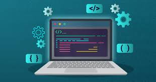
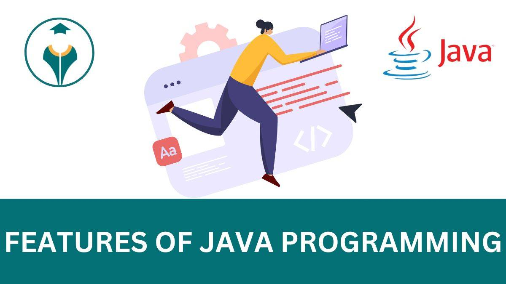

Introdução aos Sistemas Distribuídos e à Plataforma Java
Iniciaremos este módulo abordando os conceitos fundamentais de sistemas distribuídos, destacando as vantagens e desafios associados a essa arquitetura. Em seguida, exploraremos as características específicas da plataforma Java que a tornam uma escolha poderosa para o desenvolvimento distribuído.
Programação Orientada a Objetos (POO) em Profundidade
Vamos aprofundar nosso entendimento da POO em Java, revisando conceitos como encapsulamento, herança, polimorfismo e abstração. Exploraremos exemplos práticos para consolidar a aplicação desses conceitos no contexto de sistemas distribuídos.
Estruturas de Controle e Manipulação de Dados
Este módulo irá se concentrar em estruturas de controle de fluxo avançadas em Java, além de estratégias para manipulação eficiente de dados em sistemas distribuídos. Cobriremos técnicas avançadas de laços, expressões regulares e estruturas de dados mais complexas.
Design e Implementação de Classes Reutilizáveis
Aprofundaremos os princípios de reutilização de código, explorando padrões de design e estratégias avançadas de criação de classes e componentes reutilizáveis. Discussões sobre design patterns com foco na eficiência e escalabilidade serão incorporadas.
Padrões de Projeto para Sistemas Distribuídos
Introduziremos padrões de projeto específicos para sistemas distribuídos, explorando como esses padrões podem ser aplicados para resolver problemas comuns encontrados nesse ambiente. Discutiremos, por exemplo, padrões de comunicação e gerenciamento de concorrência.
Comunicação em Rede e Protocolos Avançados
Este módulo abordará aspectos avançados da comunicação em rede em sistemas distribuídos, incluindo o uso de protocolos específicos para garantir segurança, confiabilidade e eficiência na troca de dados entre os componentes distribuídos.

Persistência de Dados em Ambientes Distribuídos
Exploraremos estratégias avançadas para persistência de dados em sistemas distribuídos, incluindo o uso de bancos de dados distribuídos, técnicas de replicação e consistência de dados em ambientes distribuídos.
Segurança em Sistemas Distribuídos com Java
Este módulo fornecerá uma visão aprofundada das práticas de segurança em sistemas distribuídos, abrangendo autenticação, autorização, criptografia e mecanismos de proteção contra ameaças comuns em ambientes distribuídos.
Tópicos Avançados em Concorrência e Multithreading
Aprofundaremos os conceitos de concorrência em Java, abordando tópicos avançados relacionados a multithreading, sincronização e resolução de problemas típicos encontrados em sistemas distribuídos.

Desenvolvimento de Aplicações Distribuídas em Nuvem
Este módulo explorará como desenvolver e implantar aplicações distribuídas na nuvem usando tecnologias relevantes, como serviços de nuvem, contêineres e orquestração de contêineres.
Testes e Depuração em Sistemas Distribuídos
Abordaremos estratégias avançadas para testes e depuração em ambientes distribuídos, incluindo a simulação de cenários complexos e a utilização de ferramentas específicas para diagnóstico e monitoramento distribuído.
Desafios e Tendências em Sistemas Distribuídos
Concluiremos o módulo discutindo os desafios atuais e futuras tendências em sistemas distribuídos, explorando temas como computação em borda, microsserviços e arquiteturas sem servidor.